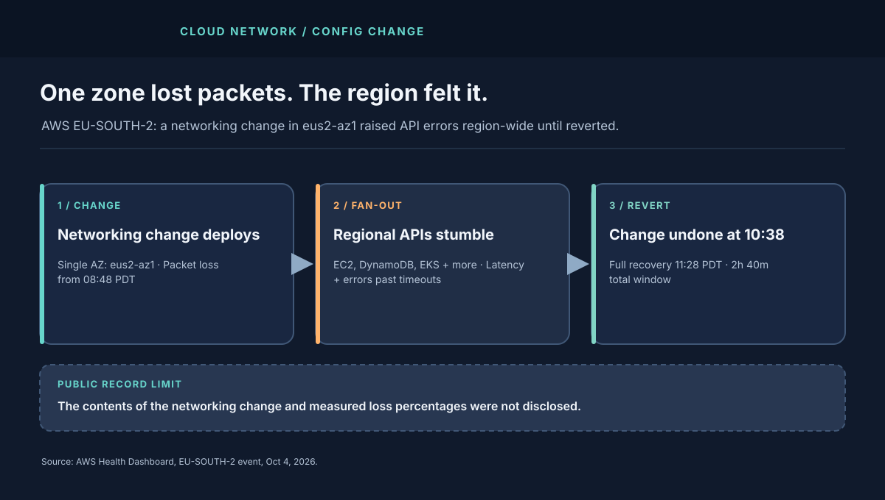
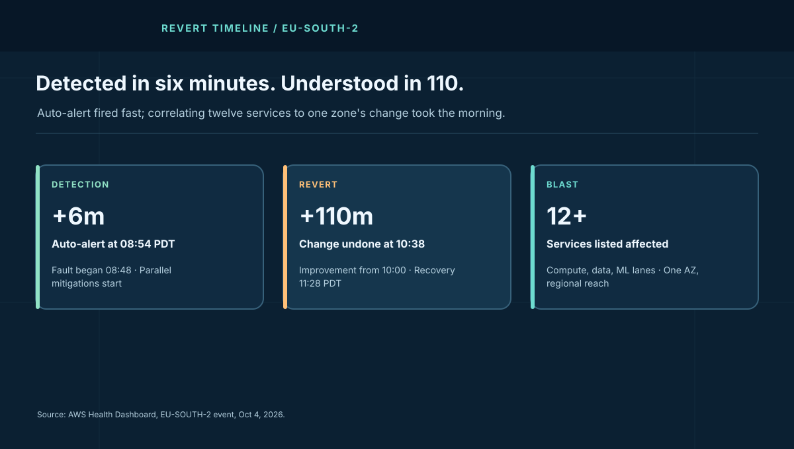

1. A Zone Coughed. A Region Felt Sick.
AWS auto-detected the fault within six minutes — 08:54 against an 08:48 start — and said so plainly. Engineers ran parallel mitigations while hunting root cause. Improvement showed by 10:00. Identification landed at 10:38: a networking configuration change. Revert, then full mitigation by 11:28. As timelines go, this one is crisp.
The service list is the sobering part. EC2, VPC, ELB, NAT Gateway, Transit Gateway, Direct Connect, DynamoDB, ECS, EKS, Fargate, EFS, FSx, Redshift, SageMaker, Cognito, Step Functions "and others." A single-AZ packet-loss event should, in the textbook, stay in its AZ. In practice, regional API workflows, cross-AZ control calls, and client retries carried it outward.
2. Why Packet Loss Becomes API Errors
Packet loss rarely kills connections outright. It slows them past their timeouts. A 2% loss rate on a path with TCP retransmission can inflate p99 latency by orders of magnitude while median looks fine. API calls with 5–30 second deadlines start timing out. Callers retry. Retries multiply offered load on the exact path that is already dropping packets. Error rates climb even where loss is modest, because latency, not loss, trips the deadline.
Now add the AWS dependency shape. Launching an instance touches EC2 plus VPC plus ELB plus IAM-flavored identity. A Fargate task touches ECS plus ECR-flavored storage plus networking. Each hop that crosses the lossy AZ pays the latency tax; the end-to-end call pays it once per hop. Regional aggregation — the Health Dashboard's "elevated API latencies and error rates for other workflows" — is the sum of those taxes.
3. The Revert Math: 110 Minutes to Undo
From 08:48 to 10:38 is 110 minutes from fault to identified revert. Improvement at 10:00 suggests mitigations (traffic shifting, draining, throttling) softened symptoms before the cause was confirmed — the right parallel-track behavior. Full recovery at 11:28 puts revert-to-green at 50 minutes, consistent with config propagation plus connection re-establishment plus backlog drain.
The design question is why identification took 104 minutes with auto-alert at minute six. The honest answer: packet loss in one AZ with multi-service symptoms looks like everything at first — noisy, cross-service, and easy to chase per-service instead of per-network. Correlating loss signatures across services to one zone's networking change is a join query over telemetry most teams have never rehearsed.
| PDT, Oct 4 | AWS timeline | System-design signal |
|---|---|---|
| 08:48 | Packet loss begins, eus2-az1 | Single-AZ network fault; multi-service symptoms follow. |
| 08:54 | Auto-alert fires | Detection works; correlation is the bottleneck. |
| 10:00 | Mitigations show improvement | Parallel tracks beat serial root-causing. |
| 10:38 | Change reverted | Revert is the fastest fix — if the change is revertible. |
| 11:28 | Resolved | Propagation plus drain sets the tail, not the revert click. |

4. What I Would Harden
- Canary every networking change per AZ, with automatic revert. Packet-loss, retransmit-rate, and p99 API-latency guards per zone should halt rollout without human debate. The change that can not auto-revert should not ship at regional blast radius.
- Correlate by network fate first. When a dozen services degrade together, the first query should join by AZ and network path, not by service. Build that dashboard before the incident.
- Bulkhead regional workflows from zonal loss. Prefer in-AZ affinity for control calls where correctness allows; fail fast across zones with hedged requests and tight budgets instead of letting every call pay the lossy path's tax.
- Cap retry amplification explicitly. Regional API clients need bounded retries with jitter, circuit breaking per AZ, and load shedding — or the rescue traffic finishes what the packet loss started.
- Cell the control plane. The cell-based control plane pattern exists for exactly this: a fault in one cell's network should not queue decisions in every other cell.
Contrast with May's US-EAST-1 thermal event: same vendor, same single-AZ shape, different organ — heat then, packets now. Both escaped the zone through shared workflows. The zone boundary held the servers; it never held the APIs.
5. Field Glossary: Eight Terms This Incident Teaches
Cloud-network postmortems share a dialect. Eight entries, each anchored to the AWS timeline:
| Term | What it means here | Why it mattered on Oct 4 |
|---|---|---|
| Packet loss | Packets sent but never arriving; retransmission fills the gap. | The zone-level fault behind every regional symptom. |
| Tail latency (p99) | The slowest 1% of requests — where loss hides. | Medians looked survivable while p99 blew past API deadlines. |
| Availability Zone (AZ) | An isolated data-center cluster inside a region. | eus2-az1 held the fault; the region inherited it anyway. |
| Blast radius | The full set of systems one fault can reach. | Twelve-plus services from one zone's packets. |
| Config revert | Undoing a change to last-known-good state. | The 10:38 fix; full green followed at 11:28. |
| Retry amplification | Client retries multiplying load on a sick path. | Turned latency into errors across regional workflows. |
| Parallel-track mitigation | Softening symptoms while root-causing continues. | Improvement by 10:00, before the 10:38 identification. |
| Error budget | Allowed unreliability per SLO period (43.2 min/month at 99.9%). | A 160-minute regional degradation burns nearly 4× the monthly budget. |
6. Operator Playbook: Your First 30 Minutes of Zonal Packet Loss
When a dozen services degrade together and one zone keeps appearing in the traces, work the network fate first:
- Minute 0–5: join by zone, not by service. Group errors by AZ and network path before opening twelve service war-rooms. A shared zonal signature means one incident, not twelve.
- Minute 5–10: cap the retry storm. Enforce bounded retries with jitter and per-AZ circuit breaking on your own clients. Your fleet's retries are load on the lossy path — shed them before they finish the job the packets started.
- Minute 10–20: route around the zone. Shift new work to healthy zones, prefer in-AZ affinity for control calls where correctness allows, and fail fast with hedged requests instead of waiting out lossy-path timeouts.
- Minute 20–30: spend error budget deliberately. A regional degradation burns months of budget in hours. Decide in writing what stays degraded, what fails over, and who tells customers — then tell them. Silence spends trust faster than errors spend budget.
Afterward, build the dashboard you wished you had: per-AZ loss, retransmit rate, and p99 API latency on one pane, plus a rehearsed zone-evacuation runbook. The SRE observability course and the cell-based control plane pattern are the two companions for this work.
7. The Cost Model
A 160-minute window of elevated regional API errors prices in retries and human time, not just failed calls. Model a fleet doing 10,000 regional API calls per hour with a 10% excess failure-and-retry rate during the window: roughly 2,700 wasted calls, each carrying client compute, logging, and on-call attention. At a modeled $150 per on-call hour across three responders for four hours, the human bill alone approaches $1,800 — dwarfing the API bill. Your numbers go in the downtime cost calculator; the shape stays the same.
Appendix A. Worked Example: Budget Burn and Canary Math
Labeled models — AWS disclosed no loss percentages or customer counts. First, the budget. A 99.9% monthly SLO allows 43.2 minutes of degradation. This incident's 160-minute regional window burns 3.7× the entire monthly budget in one morning — before counting the retry aftershocks. At 99.95% (21.6 min/month) it is 7.4×. Enter your own SLO and burned minutes in the error budget calculator: any single event exceeding 1× monthly budget should trigger a mandatory architecture review, not just an incident review. Budgets that can be spent fourfold without a design consequence are decorations.
| Canary stage | Blast in this incident's terms | Guard that halts it |
|---|---|---|
| Stage 0: lab + replay | Zero production packets | Loss/error/latency vs baseline on replayed traffic |
| Stage 1: one rack, 5 min | Single-digit hosts in eus2-az1 | Retransmit rate > 2× baseline halts in 60 s |
| Stage 2: one AZ, 30 min | eus2-az1 only, capped | Zonal p99 API latency + regional error delta halt in 5 min |
| Stage 3: region-wide | EU-SOUTH-2 | Only after stages 1–2 hold clean for their full windows |
Hypothesis, not an AWS finding: a prebuilt query joining service errors, retransmits, and latency by Availability Zone could help shorten root-cause identification in a similar event. AWS's public timeline does not describe its internal dashboards or show that a dashboard gap caused the time to identify this change. The proposed query would ask which zone explains the most cross-service degradation, then validate that lead against network telemetry.
Appendix B. Reference Posture: The Change-Safety Checklist
Every networking change at regional blast radius should carry this ticket attachment:
- Blast statement. "This change touches these AZs; worst case affects these services at this magnitude." Vague blast statements get the change rejected, not the review delayed.
- Staged rollout with auto-halt. Appendix A's four stages, with numeric guards and halt timers. Manual "watch and decide" is not a guard; thresholds that page and halt without permission are.
- One-command revert with a measured propagation time. Revert tested in staging last week, timed, documented. The 50-minute revert-to-green here is the number to beat next time.
- Retry and circuit posture of callers. Confirm regional clients carry per-AZ breakers and bounded retries before the change ships, so the change never meets an unprotected fleet.
- Fate-first runbook link. "If twelve services degrade together, open the fate dashboard before any service war-room." Print it on the change ticket.
- Budget consequence pre-agreed. If the change burns >1× monthly error budget, the follow-up is an architecture review with a date, not a lessons-learned doc that nobody reads.
This is the cell-based control plane pattern applied to change management: bound the cell, guard the boundary, rehearse the evacuation. The zone held the servers; the checklist holds the APIs.
Appendix C. Deep Dive: From 2% Loss to Regional Errors — the Full Cascade
Illustrative scenario, not an AWS measurement: assume 2% packet loss. Follow one API call through it to see how a modest loss rate can affect a service path.
Hop 1: TCP turns loss into latency. A lost segment stalls its connection until retransmission — roughly one round-trip at best, seconds at worst when retransmission timers back off exponentially. A path with 2% loss and a 50 ms RTT sees its p99 inflated into the seconds while the median barely moves. Averages lie; tails bill.
Hop 2: TLS multiplies the damage. New connections pay a handshake of several round trips before any API byte flows. Each round trip rolls the loss dice again, so handshake time grows multiplicatively with loss — a 4-round-trip handshake on a 2%-loss path fails or restarts often enough to dominate total call time. Short-lived API clients that open fresh connections per call (common in serverless and orchestration paths) pay this tax on every invocation.
Hop 3: pools clog. Connection pools hold workers for the duration of each slow call. As §2 noted, 4-second stalls turn a 1,000-worker pool into a 250-RPS trickle. Borrowers queue for connections, queue timeouts join request timeouts, and the pool that was sized for healthy latency becomes the second bottleneck behind the network.
Hop 4: workflows fan out. One "launch instance" workflow touches EC2, VPC, ELB, and identity in sequence; each hop independently pays the loss tax, and the end-to-end latency is the sum of inflated hops. Parallel fan-out is no rescue either: the workflow waits for the slowest branch, and on a lossy path the slowest branch is always slower than you modeled.
Hop 5: retries close the loop. Timed-out workflows retry end-to-end, re-paying hops that already succeeded. Regional offered load climbs while regional goodput falls — the exact "elevated API latencies and error rates" the Health Dashboard reported. The antidotes compose in reverse order: bound end-to-end retries with jitter (hop 5), hedge slow branches (hop 4), size pools for degraded latency and break per-AZ (hop 3), reuse connections to dodge handshakes (hop 2), and canary network changes per AZ with loss guards (hop 1). Five hops, five defenses, no single hero.
Appendix D. The Dashboard: Building the Fate-First Pane
This is a proposed fate-first dashboard for similar incidents, not a description of AWS's internal tooling. Its six panels join network and service symptoms by Availability Zone; teams should tune alert thresholds against their own baseline and runbooks.
Panel 1: per-AZ packet loss and retransmit rate. Loss percentage plus TCP retransmits per second, broken down by AZ, with a 60-second rolling baseline. Guard: sustained 2× baseline in any AZ pages the network on-call directly — not the service teams, the network owner. Loss is a network fate; route the page to fate's owner.
Panel 2: per-AZ p99 API latency vs median. When p99 climbs while medians hold, the shape is loss or downstream stall, never uniform load. Guard: p99-to-median ratio above 10× in any AZ opens a fate incident automatically. Ratios detect shapes that absolute thresholds miss.
Panel 3: cross-service error correlation by AZ. The join query from Appendix A as a standing view: for each AZ, the count of services whose error delta exceeds 3× baseline. Guard: three or more services sharing one AZ's degradation declares a suspected fate event and suppresses per-service pages. One incident, one war-room, twelve muted pagers.
Panel 4: handshake and pool telemetry. TLS handshake p99 plus connection-pool wait time per AZ. These are the leading indicators of Hop 2 and Hop 3 in Appendix C — they move minutes before end-to-end error rates do. Guard: pool wait above 20% of request deadline means the pool, not the network, is now the binding constraint; break per-AZ and shed.
Panel 5: retry multiplication factor. Offered requests divided by unique workflows per minute, per region. Values above 1.5× mean clients are amplifying the fault; above 2× means the rescue traffic is now the incident. Guard: auto-engage client-side breaker tightening at 1.5×, no human approval needed.
Panel 6: error-budget burn multiple. Current burn rate expressed as multiples of the monthly budget per hour, from the error budget calculator math. This panel converts engineering signals into business language: "burning 4× monthly budget per hour" authorizes failover spending that "p99 elevated" never will.
8. The Verdict
AWS detected fast, mitigated in parallel, named the cause, and reverted within the same morning. That is a good timeline. The architecture still let one zone's packets tax a region's APIs for nearly three hours. Until networking changes ship with per-AZ canaries and regional workflows bulkhead against zonal loss, every region carries this exact 160-minute shape.
Twelve services paid one change's fare. What to watch next: whether your networking changes carry per-AZ canaries with numeric halt guards, whether the fate-first pane from Appendix D exists anywhere outside this article, and how many minutes your last cross-service incident spent before someone asked "which zone explains all of this?" The next config change is already in somebody's deploy queue — the open question is whether it ships with a revert its author has timed.
One change. One zone. Twelve services paying its fare.
Sources and Method
Times, zone, service list, and revert recovery are attributed to the AWS Health Dashboard timeline for the Oct 4, 2026 EU-SOUTH-2 event. Loss math and cost figures are Buildopsy's labeled scenario models. Change contents and loss percentages were not disclosed.